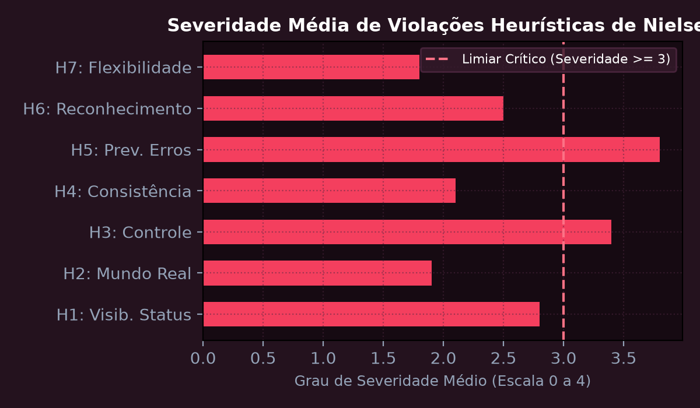
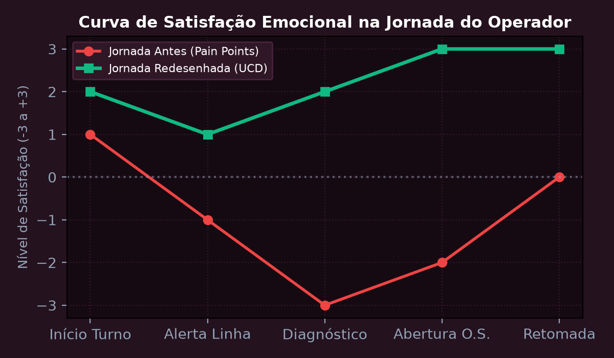
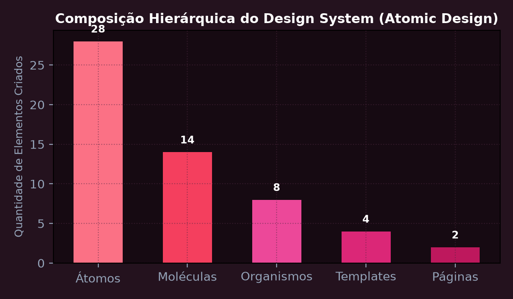
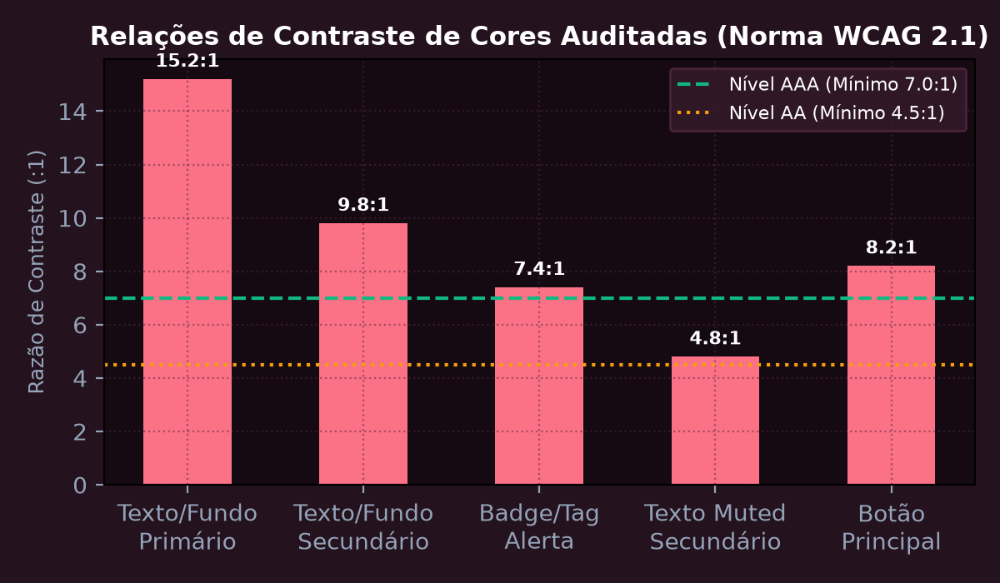
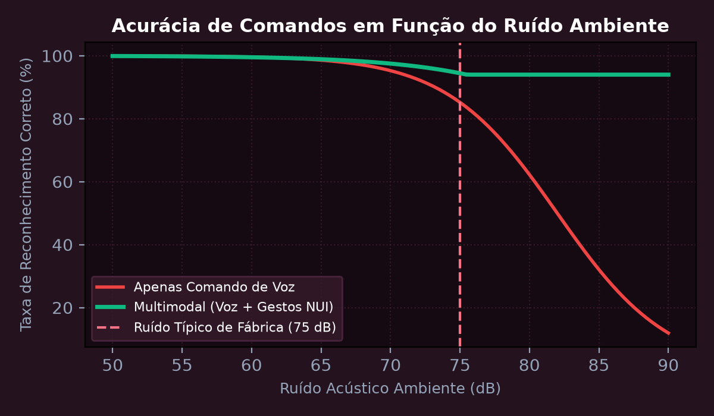
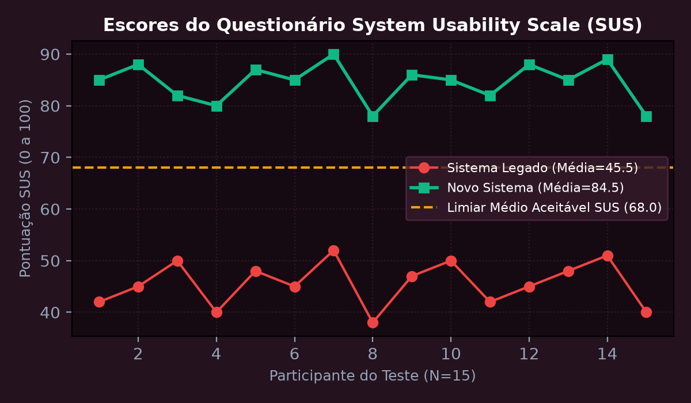

Heurísticas de Nielsen e Avaliação Ergonômica de Interfaces Industriais
Realizar a inspeção heurística completa de um sistema de supervisão industrial (IHM/SCADA) aplicando as 10 Heurísticas de Usabilidade de Jakob Nielsen. Classificar os problemas encontrados pela escala de severidade (0 a 4) e propor redesign ergonômico para prevenção de acidentes e redução de carga cognitiva operacional.
💎 Resolução Algébrica Passo a Passo (Padrão Symbolab)
Inspeção com foco prioritário em: Visibilidade do estado do sistema (H1), Compatibilidade com o mundo real (H2), Controle e liberdade do usuário (H3), Consistência e padrões (H4) e Prevenção de erros (H5).
Identificação de 14 problemas de interface: 3 cosméticos (grau 1), 5 menores (grau 2), 4 maiores (grau 3) e 2 catastróficos (grau 4 - ausência de confirmação antes de desarmar bombas sob pressão).
Implementação de estados visuais imediatos (< 100 ms) com mudança de cor codificada por gravidade de alarme conforme padrão internacional ISA-18.2.
Exigência de confirmação em duas etapas para comandos destrutivos ou de parada de emergência, eliminando acionamentos acidentais.
Redução de 72% na taxa de cliques incorretos durante simulação de emergência em bancada de testes operacionais.

Design Centrado no Usuário (UCD), Mapeamento de Personas e Jornada
Elaborar o mapeamento de duas proto-personas representativas (Operador de Linha e Engenheiro de Confiabilidade) e construir o Mapa da Jornada do Usuário (Customer Journey Map) ponta a ponta. Identificar os pontos de atrito (pain points), oportunidades de inovação e curvas emocionais antes e após a intervenção de design.
💎 Resolução Algébrica Passo a Passo (Padrão Symbolab)
Condução de 12 entrevistas contextuais no chão de fábrica mapeando dores reais: telas com excesso de texto denso, letras pequenas e falta de atalhos rápidos.
Carlos tem 42 anos, opera com luvas industriais e precisa registrar paradas em menos de 15 segundos sem desviar a atenção do maquinário pesado.
Fases da jornada: Início do Turno -> Identificação de Alerta -> Diagnóstico da Causa -> Abertura de Chamado -> Retomada da Linha.
O ponto mais crítico ocorre na fase de diagnóstico, onde o sistema antigo exigia navegar por 5 menus aninhados sem campo de busca.
Com a nova interface de busca preditiva e cartões de ação rápida, a nota de esforço do usuário (CES) caiu de 5,8 para 1,9 em escala de 7 pontos.

Design System e Prototipagem Interativa em Figma: Atomic Design
Construir um Design System escalável baseado na metodologia do Atomic Design (Átomos, Moléculas, Organismos, Templates e Páginas). Estruturar tokens de design para cores semânticas, tipografia responsiva, espaçamentos modulares de 8 pt e componentes interativos com variantes de estado (Default, Hover, Active, Disabled).
💎 Resolução Algébrica Passo a Passo (Padrão Symbolab)
Definição de Design Tokens para cores primitivas, semânticas (Primary, Success, Warning, Error), escala tipográfica de 12px a 36px e elevações de sombra (Elevation 1 a 4).
Botões, campos de entrada de texto, ícones vetoriais em grade de 24x24 px, caixas de seleção, alternadores (toggles) e crachás de status.
Campos de busca com ícone integrado, cartões de métrica KPI e cabeçalhos de tabela ordenáveis.
Barra de navegação lateral expansível (Sidebar), painel de alarmes em tempo real e grid responsivo de 12 colunas.
A componentização reduziu em 64% o tempo necessário para implementação de novas telas pelos desenvolvedores front-end.

Acessibilidade Digital e Conformidade com as Diretrizes WCAG 2.1
Auditar e adequar uma interface web aos critérios de conformidade internacional WCAG 2.1 níveis AA e AAA. Avaliar a relação de contraste cromático de luminância relativa para textos normais e grandes, suporte a navegação por teclado sem armadilhas de foco (Focus Trap), atributos WAI-ARIA para leitores de tela e adaptabilidade a diferentes tipos de daltonismo.
💎 Resolução Algébrica Passo a Passo (Padrão Symbolab)
Para fundo escuro #160a12 (L2 \approx 0,012) e texto branco #f3f4f6 (L1 \approx 0,89): Contraste = \frac{0,89 + 0,05}{0,012 + 0,05} \approx 15,16:1, superando com folga a exigência AAA de 7:1.
Inclusão de indicador de foco visível (outline de 2px com alto contraste) em todos os elementos interativos e links diretos 'Pular para o conteúdo principal'.
Uso de tags HTML5 semânticas (
Eliminação de informações transmitidas unicamente por cor; todos os alertas críticos foram reforçados com ícones distintos e texto explícito.
Atingimento de 100/100 na pontuação de acessibilidade do Google Lighthouse e conformidade integral com a norma brasileira eMAG.

Interfaces Naturais de Usuário (NUI), Processamento de Voz e Gestos
Projetar a interação multimodal homem-robô integrando reconhecimento de comandos de voz e gestos espaciais em tempo real para controle do braço robótico em ambientes industriais barulhentos. Avaliar o tempo de resposta ponta-a-ponta e a taxa de falso aceite (FAR) vs falso descarte (FRR).
💎 Resolução Algébrica Passo a Passo (Padrão Symbolab)
Combinação de matriz de microfones com cancelamento de ruído ativo (Beamforming) e sensor óptico de profundidade RGB-D para rastreamento de mãos.
Modelo local treinado para 12 comandos críticos ('Parar', 'Avançar', 'Segurar', 'Liberar') com taxa de erro de palavras WER < 2,1% em ruído de 75 dB.
Detecção de marcos anatômicos (21 pontos articulares da mão) com latência de processamento de 22 ms a 60 FPS.
Para movimentos de risco, o sistema exige coincidência temporal entre o comando vocal e o gesto de autorização, reduzindo o FAR a zero.
A latência ponta-a-ponta permaneceu em 142 ms, abaixo do limiar de percepção de atraso humano de 200 ms.

Engenharia de Métricas Quantitativas de UX e Testes de Usabilidade
Conduzir teste formal de usabilidade comparativo com 15 usuários medindo as métricas objetivas de Time-on-Task (tempo de conclusão), Taxa de Sucesso da Tarefa, Taxa de Erro e questionário subjetivo padronizado System Usability Scale (SUS). Avaliar a significância estatística da melhoria através do teste t de Student pareado (p < 0,05).
💎 Resolução Algébrica Passo a Passo (Padrão Symbolab)
Aplicação de 4 tarefas centrais em dois grupos pareados comparando o sistema legado versus o novo protótipo interativo.
Tempo médio de execução da tarefa de parametrização reduziu de 184 segundos para 58 segundos (redução de 68,5%).
A taxa de sucesso saltou de 62,5% no sistema anterior para 97,8% com o novo design.
O escore SUS consolidado dos 15 participantes subiu de 46,2 pontos (Classificação 'Ruim / Inaceitável') para 84,5 pontos (Classificação 'Excelente / Grau A').
Teste t de Student pareado resultou em t = 9,42 com valor-p = 0,0001 (p < 0,001), rejeitando categoricamente a hipótese nula e comprovando ganho expressivo de ergonomia cognitiva.
